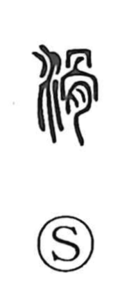

滑

Uncategorized
Kun: suberu, nameraka | On: katsu, kotsu
to slip ・ to slide ・ smooth
Explanation
滑 is a phono-semantic character: the water element signals wetness, while 骨 functions as the phonetic that gives the on-readings katsu and kotsu—its role as a sound marker is also seen in 猾 “wily.” The smooth, polished surface of bone reinforces the idea of sleekness, so with water it evokes getting wet and becoming slippery or smooth. The compound 滑稽 was originally the name of a wine vessel famed for seeming never to run dry, an image that led to the sense of speech flowing freely and without hesitation, and from there to joking and witticism.